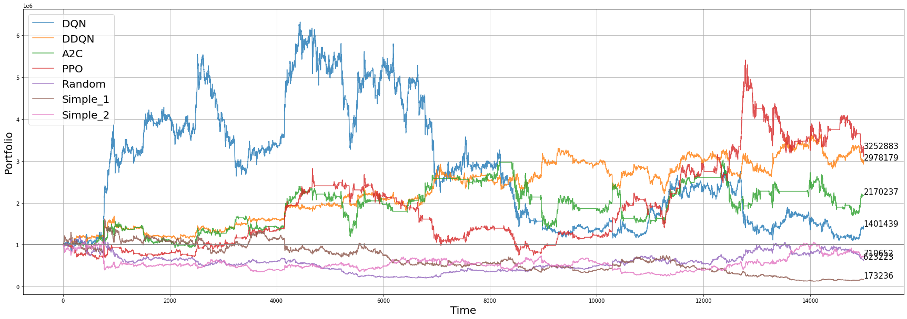
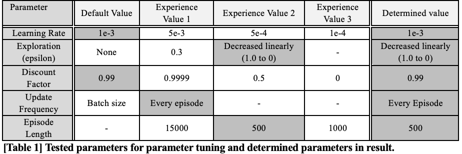

Surf on Chart: Training RL model for coin trading
Agents were trained to perform coin trading using reinforcement learning
algorithms such as DQN, DDQN, A2C, PPO.
Tensorforce
library was used to implement the agents, and multiple tests were
conducted to find optimal tuning parameters. In our experiments, the PPO
agent was revealed to generate the highest profit. However, due to the
high frequency of learning results falling into local optima, they
cannot be fully trusted.

RL Agents
-
A2C: A2C is a kind of Actor-Critic method which utilizes
expected output as advantage. Advantage is a subtraction of state
value from state-action value. Critic learns from advantage. A2C is
good for learning how much it will gian "more" not only the absolute
gain the agent gets.
-
PPO: PPO is a learning technique that simplifies the complex
computations of TRPO (Trust Region Policy Optimization), a type of
A2C, while maintaining its performance. During the update process, it
is limited to update only in the trusted region through clipping,
enabling more stable learning.
-
PPO: PPO is a learning technique that simplifies the complex
computations of TRPO (Trust Region Policy Optimization), a type of
A2C, while maintaining its performance. During the update process, it
is limited to update only in the trusted region through clipping,
enabling more stable learning.
-
DQN: Deep Q-Network. This method use a deep neural network in
Q-Learning, an off-policy control method of TD. The Q function is
updated using the largest Q value at the next state s'. While
selecting the action with the highest Q value, sufficient exploration
is also performed.
-
DDQN: Double Deep Q-Network. DDQN updates DQN based on the
Q-value obtained from the Target Network, which updates the estimated
Q-value for the chosen action.
Parameter Tuning
Repetitive experiments were done for hyperparameter tuning. The default
value was set according to documentation of tensorforce library, which
we used to implement RL algorithms. We tested if bigger or smaller
hyperparameters would be better than the default value of them.
Additionally, hyperparameter values of reference papers were also
tested. The test range was narrowed in direction of some values which
showed better performance compared to default values.

Problem of model constantly choosing same action "Hold"
An endemic problem of AI investment had been reported from previous
stock and coin trading model researchers, which is that as the model get
trained more, they tend to keep selecting action “Hold”. When agent
performs action “Hold”, They do not buy or sell any assets. We observed
same problem in our own research.
The problem is that buying nor selling coin would not preserve the
initial balance in real world. The reason is that value of cash
continues to decline. We reflected the reality to our trader
environment, giving penalty to value of cash as timestep goes by. The
models trained in revised environment chose “Hold” less. Additionally,
we introduced idea of “Long” and “Short” positions to our environment so
that agents could be capable for much more aggressive investment. This
also reduced the problematic situation that trained models only tend to
“Hold”.
Tuning episode length for best performance
At the beginning of experiments, whole chart data (Bitcoin
open/close/high/low/volume data from 2017-12-09 23:00:00 to 2018-02-03
12:15:00 with 5-min timestep) was used, counting up to 15000 tick data.
However, in this case, loss did not decrease stably, thus model was not
trained appropriately. In order to resolve the problem, we conducted a
little research and referenced Github community of Tensorforce library.
A researcher who was struggling on same problem (which means model
seemed to be not learning) reported the problem to the Github community,
and Tensorforce developers explained that too long training episode
might be troublesome for training and recommended to lessen the training
data.
According to the idea we used shorter episode length and reconducted
experiments. 3 different piece of chart data with length 500 tick was
used as training data. Initially, we programmed the trainer code to get
random 3 slices. However, because we aimed to train agent with different
RL algorithms and compare them, we had to eliminate the randomness and
fix the training slices. Bull market, bear market, and box patterned
market were selected as training data because trained model should make
a profit at any environment after the training phase. Bull market
specifies a market which has continuously rising coin price, bear market
represents a market with continuously falling coin price, and box
patterned market means a market which has both price falling and rising
phase, but not showing outstanding falling nor rising.